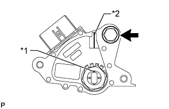

ДАТЧИК ПОЛОЖЕНИЯ ПАРКИНГА / НЕЙТРАЛИ > УСТАНОВКА |
| 1. УСТАНОВИТЕ ДАТЧИК ПОЛОЖЕНИЯ ПАРКИНГА / НЕЙТРАЛИ В СБОРЕ |
Установите датчик положения паркинга/нейтрали на вал клапана с ручным управлением.
Временно вверните болт.
Установите новую стопорную шайбу и гайку.
 |
Поверните левый рычаг приводного вала до упора по часовой стрелке, а затем поверните его на 2 прорези против часовой стрелки для установки в положение N.
|  |
Совместите канавку с базовой линией нейтрали.
| *1 | Канавка |
| *2 | Базовая линия нейтрали |
Удерживая датчик на месте, затяните болт.
С помощью отвертки загните лепестки стопорной шайбы.
Подсоедините разъем выключателя.
| 2. ОТРЕГУЛИРУЙТЕ ПОЛОЖЕНИЕ РЫЧАГА ПЕРЕКЛЮЧЕНИЯ ПЕРЕДАЧ |
Снимите задний вещевой ящик в облицовке туннеля пола (Нажмите здесь).
Для моделей с холодильной камерой:
Снимите задний вещевой ящик в облицовке туннеля пола (Нажмите здесь).
Установите рычаг переключения передач в положение N.
 |
Ослабьте гайку на наконечнике троса.
Немного протолкните трос переключения в направлении задней стороны автомобиля и затяните гайку.
Переведите рычаг переключения передач и убедитесь, что при перемещении рычага переключения передач из положения N в положение D возникает меньше дрожания, чем при перемещении рычага в положение P.
Установите задний вещевой ящик в облицовке туннеля пола (Нажмите здесь).
Для моделей с холодильной камерой:
Установите задний вещевой ящик в облицовке туннеля пола (Нажмите здесь).
| 3. ПРОВЕРЬТЕ ПОЛОЖЕНИЕ РЫЧАГА ПЕРЕКЛЮЧЕНИЯ ПЕРЕДАЧ |
Переведя рычаг переключения передач из положения P в положение R при включенном зажигании и нажатой педали тормоза, убедитесь, что он перемещается плавно и фиксируется в требуемом положении.
Удостоверьтесь, что рычаг переключения передач не останавливается при перемещении из положения R в положение P, и не заедает при перемещении из положения D в положение L.
Запустите двигатель и убедитесь, что автомобиль начинает двигаться вперед после перемещения рычага переключения передач из положения N в положение D и назад после установки рычага в положение R.
Если результат проверки не удовлетворяет требованиям, проверьте датчик положения паркинга/нейтрали в сборе и монтаж напольного механизма переключения передач в сборе.
Если индикатор не соответствует положению рычага переключения передач, выполните следующие процедуры регулировки.
| 4. ПРОВЕРЬТЕ ДАТЧИК ПОЛОЖЕНИЯ ПАРКИНГА/НЕЙТРАЛИ В СБОРЕ |
Включите стояночный тормоз и установите замок зажигания в положение ON (ВКЛ).
Нажмите педаль тормоза и убедитесь, что двигатель запускается при установке рычага переключения передач в положения N и P и не запускается в других положениях рычага.
Убедитесь, что в положении R рычага переключения передач загораются фонари заднего хода, и подается звуковой сигнал заднего хода, а в других положениях рычага эти устройства выключены.